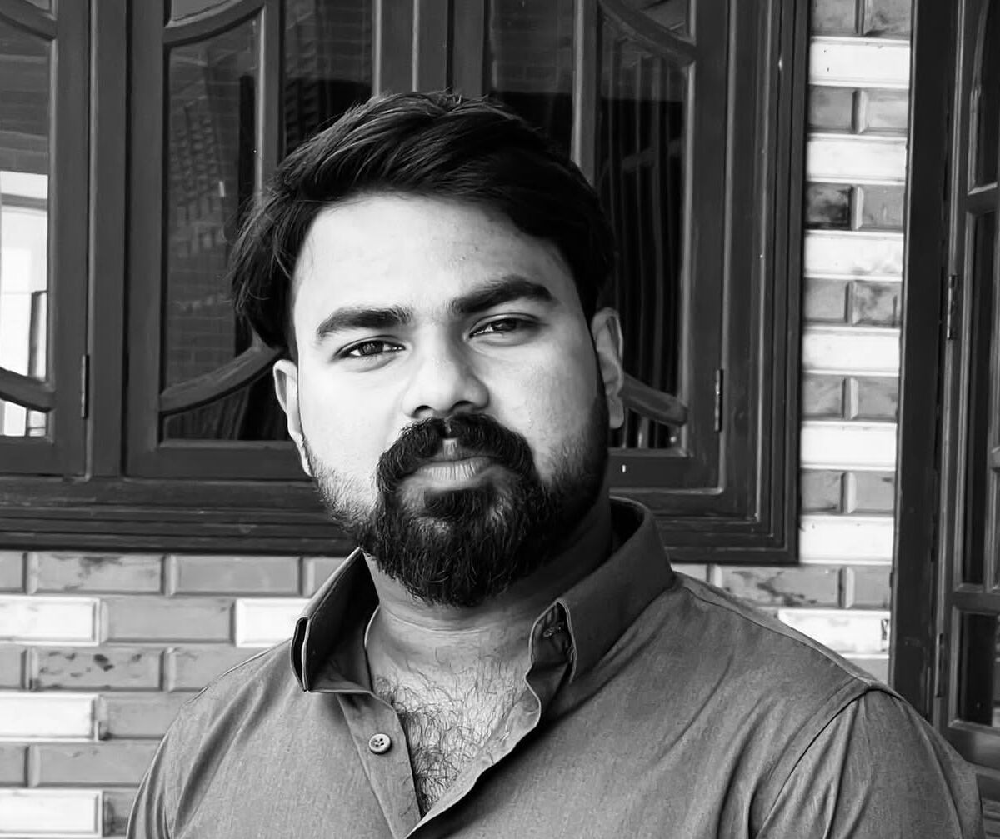

Welcome to HAYIT CONCEPTS!!
Indulge in the extraordinary, where innovation meets
sophistication, and every space becomes an expression of your unique personality. Step inside;
you have arrived at the single destination catering to all your dream home essentials.
Our team is dedicated to provide excellence in every aspect of your
project, from initial design to final handover, guaranteeing the highest level of craftsmanship
and client satisfaction throughout. The founders of Hayit Concept, Mr. Mohamed Shafi, Mr. Sufail
Shalu, and Mr. Rahees AM, elevate the construction of homes with their innovative and
eco-friendly methods. A group of highly motivated visionaries dedicated to delivering
high-quality products to customers, with a strong emphasis on sustainability. We are dedicated
to conserving natural resources, preventing environmental pollution, and managing resource usage
responsibility. Ensuring top-tier quality standards is always the foremost priority at Hayit
Concepts.
We undertake the construction of homes, flats, villas, and malls,
harmonizing our designs with the picturesque beauty of the natural environment. Our designs,
project estimation, execution, and interactions with stakeholders are superior to those of
typical concrete workers. We ensure that every aspect of the project will be marked by a
timeless touch of excellence. We engage the finest experts in each field for every phase of the
project’s construction, ensuring a comprehensive and integrated approach. Like our customers, we
reject mediocrity; we are committed to excellence and dedicated to meeting customer
expectations. Throughout every stage of the project’s development, we actively engage our client
to ensure their complete satisfaction and gratification. Initially, we encountered challenges
due to the pandemic, which emphasized the importance of social commitment. Following a period of
quiet, we shifted our focus to low-cost yet aesthetically pleasing projects, recognizing that
such small initiatives can contribute to our efforts to protect the environment. As fully
qualified engineers, we are committed to serving our clients by offering assistance to
individuals seeking affordable, environmentally friendly, and durable homes. As of this time, we
have initiated projects across Kerala, Tamil Nadu and Karnataka. We are honored to have our
innovative design concepts acknowledged, receiving the prestigious ICI Ultra Tech award for Jury
Appreciation Best in 2022. With every dream project we deliver, our Hayit Concepts family grows.
Join us in turning dreams into reality, rest assured! We have got it covered.
Mohamed Shafi CP
Director-projects
Sufail Shalu
Director-design

Rahees AM
Director-marketing
ShafeeK Y
Associate designer
HIGHLIGHTS
- We listen!
A fundamental aspect of our approach is understanding client requirements, from
grasping
the strategies to incorporating earthy methods and modern technologies that shape design
layouts.
- Systems driven and scalable
By embracing Building Information Modeling (BIM) and the sophisticated filing and
design systems of larger practices, we ensure highly professional standards of work,
making all projects scalable and enabling our architects to manage projects of any
size.
- Balanced, diverse portfolio of projects across all sectors
Notably, architects had worked with major developers, as well as on projects ranging
from industrial units and urban residential designs to sensitive rural housing.
- In the hands of an architect and discerning eye of a developer
Architects transforming capital investment into innovative designs.
- Whether it involves our clients or our team members, we prioritize honesty, passion
commitment in all our interactions.
- We are passionate about our work, and that’s why we pour our hearts into everything we
do.
- We take a hands-on approach to all our projects, maintaining an active and on-the-ground
presence throughout the construction process.
- The firm believes that sustainability should be the norm rather than a choice and is
committed to making it more accessible to everyone.
- We are a people-centered practice, united by a shared passion for creation and
innovation, dedicated to building lasting relationships within our ecosystem.
- Earthen architecture narrates the tale of living structures that not only rest on earth
but also harmoniously integrate with it. The beauty of earthen architecture lies not
only in its aesthetic appeal but also in its deep environmental significance. Earthen
architecture isn’t merely a nostalgic look to the past, it’s a forward-thinking move
towards a construction future that’s both sustainable and resilient.
- Our designs embrace the charm of a rustic finish, blending natural materials and
timeless aesthetics to create warm, inviting spaces.
- Incorporating rustic finishes, we bring a sense of authenticity and heritage to modern
architectural projects.
- Experience the beauty of rustic elegance with our expertly crafted designs, where each
element tells a story of craftmanship and tradition.
- Our firm specializes in rustic finishes that transform spaces into cozy, welcoming
environments with a touch of natural beauty.
- From reclaimed wood accents to stone details, our rustic finishes add character and a
sense of history to any architectural style.
- We combine modern functionality with rustic charm, creating unique and inspiring spaces
that stand the test of time.
- Our rustic finish designs seamlessly integrate the raw beauty of nature with
sophisticated architectural concepts.
- Let us bring your vision to life with our signature rustic finishes, adding warmth,
texture, and character to every project.
- Our designs create spaces of tranquility, blending seamlessly with nature to offer
peaceful retreats from the bustling world.
- Experience unparallel tranquility in our architectural creations, where every element is
designed to soothe and inspire.
- Discover the tranquility of our thoughtfully designed homes, where architecture meets
peace and harmony.
- Our architectural firm is dedicated to designing serene spaces that promote relaxation
and well-being.
- With a focus on tranquility, our designs transform ordinary spaces into serene
sanctuaries.
- Our architectural designs embody purity, with clean lines and minimalist aesthetics that
create a sense of calm and order.
- In our work, purity is reflected through seamless integration of architecture and
environment, resulting in harmonious living spaces.
- We use organic shapes to harmonize with natural surroundings, ensuring our buildings
blend seamlessly with the landscape.
- Our architectural designs feature bold, geometric shapes that create dynamic and
visually striking spaces.
- Clean, angular shapes define our modern architectural approach, emphasizing precision
and contemporary elegance.
- We incorporate traditional shapes with a modern twist, honoring classic architecture
while pushing the boundaries of design.
- The interplay of light and shadow on our thoughtful designs adds depth and character to
every structure.
- Our designs often feature a blend of rectilinear and curvilinear shapes, balancing
structure with softness for a harmonious effect.
- We explore innovative shapes and forms, challenging conventional architecture to create
spaces that inspire and captivate
- Specialization in intricate carving designs add a touch of elegance and sophistication
to every project.
- We take pride in our attention to detail, meticulously crafting carving designs that
enhance the character and charm of each space.
- Elevate your space with bespoke carving designs tailored to your unique version, adding
a personalized touch to your architectural masterpiece.
- From concept to completion, our architectural firm turns 3D designs into stunning
realities, bringing your vision to life.
- See your architectural dreams come alive in vivid detail as we use 3 dimensional
rendering to accurately depict every aspect of your project.
- We believe in the power of aesthetics and simplicity to create timeless designs that
stand the test of time.
- Discover the perfect balance of aesthetics and simplicity in our architectural
creations, where every detail is carefully considered for maximum impact.
- From sleek modern designs to timeless classics, our architectural firm specializes in
creating spaces that prioritize aesthetics and simplicity.
- Indulge your senses in the spellbinding beauty of our secluded architectural marvels,
where serenity and sophistication converge.
- Unlock the potential of architectural design that goes beyond the frames of tradition,
embracing innovation and creativity at every turn.
- At our firm, we indulge in creating spaces that extend beyond the frames of ordinary
perception.
- Transcending the frames of ordinary design, pushing boundaries and redefining what’s
possible.
- Beauty of nature is brought indoors to enrich the living experience.
- Creates spaces that reflect a natural touch, inviting the outdoors in and fostering a
sense of connection with the environment.
- Experience the transformative power if natural touch in architecture, where even the
simplest design elements can evoke a sense of wonder and awe.
- Our goal is to streamline the experience, offering simplicity and immersion through a
wealth of axonometric drawings and comprehensive model perspective photos, enabling us
to convey a story in a single glance.